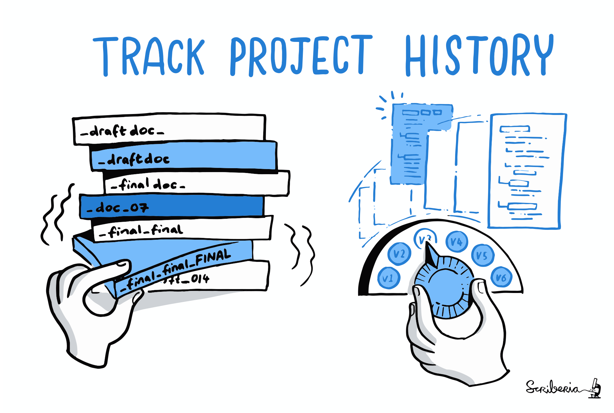
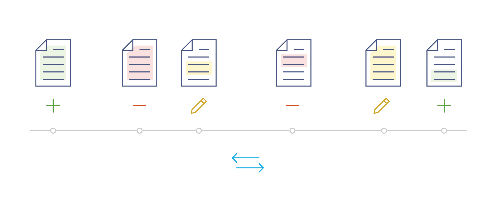

1 Introduction
1.1 Acknowledgements
We would like to express our gratitude to the following resources, which have been essential in shaping this chapter. We recommend these references for further reading:
| Authors | Title | Website | License | Source |
|---|---|---|---|---|
| Koziar et al. (2023) | swcarpentry/git-novice: Software Carpentry: Version Control with Git 2023-05 | CC BY 4.0 | ||
| Bryan (2018) | Excuse Me, Do You Have a Moment to Talk About Version Control? | Website: . | ||
| Ram (2013) | Git can facilitate greater reproducibility and increased transparency in science | CC BY 2.0 | ||
| Perez-Riverol et al. (2016) | Ten Simple Rules for Taking Advantage of Git and GitHub | CC BY 4.0 | ||
| AI for Multiple Long-term Conditions Research Support Facility (2023) | Introduction to version control with git | CC BY 4.0 |
1.2 Learning Objectives
- What is version control?
- Why is version control useful (for research)?
- What are Git and GitHub?
- What is the difference between Git and GitHub?
1.3 What is version control?
“Version control is an approach to record changes made in a file or set of files over time so that you and your collaborators can track their history, review any changes, and revert or go back to earlier versions.” – The Turing Way Community (2022), chapter on Version Control.

{kind=link}
1.4 Benefits of version control
Version control offers numerous benefits. It allows to …
- Track the history of changes in your files (it’s clear what you did & you have the option to revert back)
- Work with the latest version of a file
- Backup previous versions of files
- Go back to previous versions of your files
- Test out new features without messing up your previous version
- Collaborate with others on the same files at the same time
This makes version control a great data management and documentation tool.
1.5 Challenges
1.5.1 Example
You have a person 1 who is developing a script to analyze their data. You go through different versions, script-v1, script-v2, script-v3. Now you want to test out a new feature. It takes you a while to test this feature. It becomes unclear what you should call all these files. Then you realize that you need help with this. So then researcher 2 comes in and they help you implementing this feature. More files are created, but no ideas how to name them. Person 3 has a lot of ideas but is not editing the files directly. So script v-3 is created. One you realize that this is becoming complicated, you create a meta document that you want to use to keep track of the project progress. Then you realize that you software has bugs and you can’t figure out when this bug has occurred for the first time. Time has passed and you ask yourself: what is the latest version of my script and where is it? When did I incorporate that new feature. who made that change and why? Your collaborator asks you to run version 2 of the script but you dont have it anymore. In a real-life situation, there might be many more people involved and many more documents.
1.6 Versions in multiple files
If you are a student or researcher you might be familiar with the situation illustrated in Figure 1.2: You are writing a paper and you are really excited because you finally have a full draft. To mark this, you call the file FINAL.docx and send it off to your advisor. Your advisor has a few comments, so you integrate those changes into a new version that you call FINAL_rev2.doc. You show your draft to your advisor again and again they have even more comments. So as there are more and more rounds of feedback your file naming system an get out of hand very easily.

Apart from the issues with file naming, a deeper point of this illustration with respect to research is, that there is rarely a point in scientific work where we are really confident that something is indeed the “final” version.
If you can relate to the poor student Figure 1.2, it is quite likely that you have also already engaged in this form of version control.
More generally, this common way of implementing file versioning of files works by appending versions or descriptive labels to the filenames, or by adding initials at the end of the filename:
file_v1.docx,file_v2.docx,file_v3.docx, etc.draft.docxtodraft_comments_LW_final_edited.docx, etc.
Every time you make a critical change to a file, you duplicate it, rename it according to your versioning scheme and continue working in the duplicated file. While this approach might be manageable for a single file or user, it likely becomes messy when dealing with numerous files, repeated revisions, and multiple users, especially for large, long-term projects, as illustrated in Figure 1.2, Figure 1.3 and Figure 1.4. In such cases, more advanced version control systems may be necessary.


{kind=link}

Your number one collaborator is yourself from six months ago and she doesn’t answer emails.
If you mostly work on your own or with a very small team, you might think that you will not encounter such situations. However, remember that your number one collaborator is yourself from six months ago and you will often find yourself in situations trying to remember what happened six months ago.
Imagine you were on a very long vacation (who would not like to imagine that!) and you would come back to a project folder as illustrated in Figure 1.4. Would you know which file to continue working with? Would you know how the different files related to each other? How could someone else start working with this project or how would you start working with this if you would get such a project folder from someone else? It is very difficult to understand how to work with this project and you will likely spend a lot of time figuring out what all the different files are, what they mean and why they are titled in such a way.
1.6.1 Versions in a single file
Some software can keep track of all the changes made to a file without making new copies of the file. This includes word processors like Microsoft Word’s Track Changes, Google Docs’ version history, or LibreOffice’s Recording and Displaying Changes.
- Limited Collaboration: Word processors’ track changes feature is primarily designed for collaboration within the application, making it difficult to collaborate with users who don’t have access to the same word processing software. In contrast, Git allows seamless collaboration across different platforms and tools.
- Limited Review Features: Beyond comments in the text itself, word processors lack the advanced review features offered by Git, such as pull requests and code comments. These features facilitate the review processes, making it easier to provide feedback and discuss changes.
- Non-Atomic Commits: In most word processors, tracking changes may lead to non-atomic commits, where multiple unrelated changes are combined into one. This can make it harder to understand the history and roll back specific changes when needed, compared to the precise commit system in Git.
- Limited Branching and Merging: Git provides powerful branching and merging capabilities, allowing for the creation of multiple branches for different features or experiments. Word processors often lack this level of branching and merging, making it harder to manage complex development workflows.
- No Version Tagging: Git allows tagging specific versions, marking them as milestones or releases. Word processors generally lack this feature, which can be essential for identifying important points in the development process.
- Lack of File-Level Versioning: Word processors typically track changes at the document level, lacking the ability to track changes at the file level. Git, on the other hand, allows version control for individual files, enabling more granular control over the project’s components.
- Limited Automation: Word processors may offer basic automation features, but they can’t match the automation capabilities provided by Git and GitHub, such as pre-commit hooks, continuous integration, and automated testing.
- Difficulty in Managing Large Projects: Word processors’ track changes feature may become less efficient and manageable as the project grows in size and complexity. Git, as a dedicated version control system, is better suited for handling large-scale projects.
- No Remote Repositories: Word processors do not have built-in support for remote repositories like Git does. Remote repositories in Git enable decentralized collaboration and backup, making it easier to work with distributed teams.
- Dependency on Proprietary Software: Using word processors for tracking changes ties the version control process to specific software vendors, limiting the flexibility and interoperability that Git offers as an open-source, widely-used tool.
This allows you to look at the file’s history and see how it has changed over time. Examples of such software include Google Drive, Dropbox, and Overleaf. You may have noticed that these services automatically save different versions of your files and allow you to go back to previous versions if needed.
- Lack of Fine-Grained Versioning: Both Dropbox and Google Drive offer basic versioning features, but they often lack the granularity provided by dedicated version control systems like Git. In version control systems, you can track changes at the file level, while Dropbox and Google Drive may only keep a limited history of entire documents.
- No Code Collaboration Features: While Dropbox and Google Drive allow file sharing and real-time collaboration, they do not provide specialized features for collaboration, like pull requests, or conflict resolution, which are often essential in the development of research outputs.
- Limited Branching and Merging: Dropbox and Google Drive do not support branching and merging, making it challenging to manage complex development workflows, especially in collaborative projects.
- Dependency on Third-Party Servers: When using Dropbox and Google Drive, version control relies on their servers and infrastructure. This dependence may raise concerns about data security, privacy, and the availability of the service.
- File Size and Storage Limits: Both services have limitations on file sizes and storage space. This can be problematic for larger projects with numerous files or when working with large binary files.
- Limited Automation and Integration: Dropbox and Google Drive lack the extensive automation and integration options provided by Git. In Git, you can set up various automated workflows and integrate with continuous integration tools for smoother development processes.
- Revision Conflicts: Version control in Dropbox and Google Drive may not handle revision conflicts as effectively as Git. Resolving conflicts manually can be time-consuming and may lead to data loss or discrepancies.
- Limited Offline Capabilities: When working offline, accessing version history or performing version control tasks in Dropbox and Google Drive might not be as seamless as with Git, which is designed to work effectively in both online and offline environments.

{kind=link}
Figure 1.5 illustrates the concept of tracking versions within a single file. It illustrates a simplified linear project timeline (gray line). A version control system keeps track of the changes made to the file at specific time points (gray nodes in Figure 1.5). These nodes represent various actions such as additions (first node), deletions (second node), or edits to the content (third node). The blue arrows at the bottom indicate the ability to navigate along this linear timeline. By recording these changes, it becomes possible to access previous versions of the file. This means that you can go back and examine earlier versions or even revert the entire workflow back to a specific version, if needed. Rather than saving new files for each change, this system saves the changes within the same file, allowing for easier management and tracking of version history.
1.6.2 Features of a version control system
- What: It keeps track of the changes made to a file when you edit it.
- When: It records the date and time when each change was made.
- Who It keeps a record of who made each change.
- Why: It allows you to add a note explaining why you made a particular change.
The system takes snapshots of your project, giving them unique codes that include all these features. Instead of saving new files for each change, only the specific modifications made to the file are saved. This makes it easy to compare different versions, restore previous versions, and combine changes when needed.
1.7 Git

Among various version control systems, Git is the most widely used. It was created by the Linux development community in 2005. Git is a software primarily written in C, but you don’t need to know C.
1.7.1 Key features of Git
- Free, fast, and open source.
- It is a distributed system, meaning everyone working on a project has a complete copy of it.
- Most operations in Git can be performed using local files and resources, minimizing the need for external dependencies.
- Git keeps a detailed history of changes, including what was changed, when it was changed, who made the change, and why it was made.
- You can easily retrieve previous versions of your project, allowing you to see the progression of your work.
- Git forms the foundation for collaboration tools like GitHub and GitLab.
When you use Git, it takes snapshots of your project whenever you choose. It then compares the current snapshot with the previous one and prompts you to provide a message explaining why you made the specific changes.
The name “git” was given by the main developer Linus Torvalds when he created the software. Torvalds is well-known for his involvement in the development of the Linux kernel.
“I’m an egotistical bastard, and I name all my projects after myself. First ‘Linux’, now ‘git’.” – Wikipedia: Git
For more insights and discussions about the name, you can refer to the README.md file on GitHub.
The name “git” was given by Linus Torvalds when he wrote the very first version. He described the tool as “the stupid content tracker” and the name as (depending on your mood):
- random three-letter combination that is pronounceable, and not actually used by any common UNIX command. The fact that it is a mispronunciation of “get” may or may not be relevant.
- stupid. contemptible and despicable. simple. Take your pick from the dictionary of slang.
- “global information tracker”: you’re in a good mood, and it actually works for you. Angels sing, and a light suddenly fills the room.
- “goddamn idiotic truckload of sh*t”: when it breaks
1.8 Summary
Git is a free version control system that helps you manage and track the history of your files, allowing you to retrieve previous changes. It is used locally on your computer.
GitHub is a popular cloud-based hosting service for sharing projects tracked with Git. It offers collaboration features and serves as a reliable backup solution.
1.9 How do I interact with git on my computer?
There are many options to interact with Git.
1.9.1 Command line / terminal
See chapter on command line.
1.9.2 Extensions to existing software
Your text editor or analytical software is very likely to have a Git extensions / plugin, often via a Graphical User Interface (GUI).
1.9.3 Git Clients (applications with a GUI)
Several software applications enable the use of Git on your local computer without the need for the command line. The following is a non-comprehensive list of such software. Please consult their respective documentation for further details.
1.10 Common misconceptions
1.10.1 Misconception: Git is the same as GitHub
One of the most widespread misconceptions is that Git and GitHub are the same thing. Git and GitHub are two distinct but related tools in the world of version control.
Git is a version control system (software installed on your computer) that allows you to track changes and manage the history of your files locally on your computer. It provides features such as branching, merging, and reverting to previous versions.
GitHub is a web-based hosting service for your Git repositories, allowing you to store and share your Git projects online. GitHub provides additional collaboration features such as issue tracking, pull requests, and project management tools.
In summary, Git is the version control system itself, while GitHub is a hosting service built on top of Git. Git can be used independently without GitHub, but GitHub relies on Git for its functionality.
1.10.2 Misconception: Git is only for code and programmers
While version control systems like Git are often associated with software development (and are indeed highly valuable for managing code-related projects), they are not limited to code and not exclusive to developers. Version control can be beneficial for anyone working with files that undergo changes over time, including writers, designers, and data analysts.
1.10.3 Misconception: Git is only for collaboration
Git offers remarkable benefits for collaboration, but its value extends beyond working with others. It enables you to collaborate effectively with your past and future self, fostering valuable skills and boosting your confidence when collaborating with others. Even if you currently don’t have a specific reason to collaborate with others, trying Git on your own can be highly beneficial and rewarding.
1.10.4 Misconception: Git auto-saves your changes
Unlike automatic saving, where changes are continuously saved in the background, Git requires manual intervention to capture snapshots. You have to explicitly inform Git when you want to take a snapshot, indicating that you want it to acknowledge your changes. While this may sound annoying at first, the benefits of having full control over your version history will become apparent in later chapters of this book.